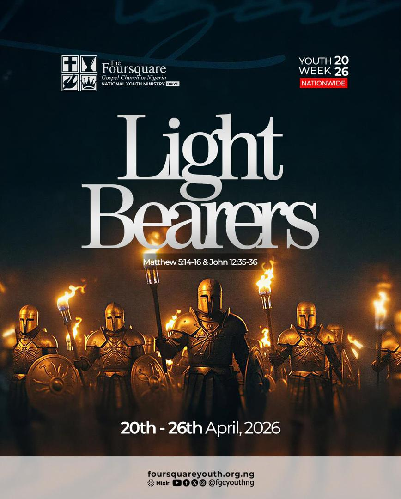

Monday, 20 April 2026 · 9:15 AM
Youth Week Fasting and Prayer
The launch of Youth Week 2026 — a special Sunday service dedicated to celebrating and empowering our youth.
Learn More"Jesus Christ the same yesterday, and today, and forever." — Hebrews 13:8
The International Church of the Foursquare Gospel was founded in 1923 by Aimee Semple McPherson in Los Angeles, California. Inspired by a vision from Ezekiel 1:4–10, she called it the "Foursquare Gospel" — the four-sided ministry of Jesus Christ revealed in Scripture.
The Foursquare Gospel Church came to Nigeria in 1955 and has since grown into one of the leading Pentecostal denominations in the country. Chapel of Joy, Lekki District Headquarters is a lighthouse of faith in the Lekki-Itedo community, committed to preaching the unadulterated Word of God, raising disciples, and transforming lives through the power of the Holy Spirit.
Salvation by grace through faith in Christ alone.
Baptism in the Holy Spirit with the evidence of speaking in tongues.
Divine healing of mind, body, and spirit through His stripes.
The imminent, glorious return of Jesus Christ for His Church.
Trusted servants called to guide, teach, and shepherd the Chapel of Joy family.
Spiritual head and overseer of FGC Chapel of Joy, Lekki District Headquarters.
Replace with Resident Pastor's name and a brief description.
Replace with Zonal Pastor's name and a brief description.
Replace with Treasurer's name and a brief description.
Replace with Admin's name and a brief description.
From special services to community programmes — stay connected with what's happening at Chapel of Joy.

Featured EventA week of empowerment, worship, and transformation for the youth of FGC Lekki. The Grand Finale is on Sunday, 26th April 2026. Don't miss it!
The launch of Youth Week 2026 — a special Sunday service dedicated to celebrating and empowering our youth.
Learn More
A special midweek revival session for the youth — powerful worship, the Word, and prayer.
Learn MoreThe climax of Youth Week 2026. A morning of celebration, testimonies, and commissioning of the youth.
Learn MoreMoments of worship, fellowship, and community from the Chapel of Joy family.


Missed a Sunday? Catch up on our latest messages. All sermons are available for free — to nourish your spirit wherever you are.
There is a place for everyone at Chapel of Joy. Find your ministry, find your calling.

Empowering young adults to discover their purpose, walk in faith, and lead with integrity.

A nurturing community where teenagers grow in faith, character, and community.

Planting seeds of faith in little hearts through worship, Bible stories, and creative learning.

Gifted musicians and vocalists leading the congregation into authentic, Spirit-filled worship.

Extending our reach through audio, video, live streaming, and social media to the world.

Creating an atmosphere of warmth, order, and welcome for every member and first-time visitor.

Ensuring excellence, dignity, and order in all official church activities and programmes.

Caring for the needs of members and the wider community through practical acts of love and service.
Your tithe, offering, and donations fuel the ministry, support outreach, and build the Kingdom right here in Lekki and beyond. Every amount counts.
Bank transfer details available on request · Contact us at fgclekkimedia@gmail.com
Whether it's a prayer request, a first-time visit enquiry, or a general message — our team is here for you.